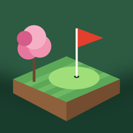

風を読んで、曲げて、カップに沈める。
机の上に置いた小さなジオラマのゴルフ場を、風を読んで回る iPhone のゴルフパズルです。 ホールごとに決まった風と、打つ前にかける回転で、木をよけ、池を越え、グリーンに止めます。 1 ホールずつ挑んでパー以内で合格（1 打少なければ金）。コースごとに 18 ホールを続けて回るラウンド、毎週月曜に替わる「今週の 3 ホール」、ランキングもあります。
ブラウザ版は「春の名門」の 18 ホールと今週の 3 ホール・広告なし。スマホでもパソコンでも遊べます。
打つ前の点線は、風がないときの球の道すじです。ホールの風（向きと強さ）で流されるぶんは自分で読み、狙いと回転で打ち消してください。風も、木に当たったときの跳ね返りも、同じ打ち方なら同じ結果になります。
ラウンド中は画面の上のメニューから「タイトルへ」を選ぶと、続きが残ります（アプリを閉じても残ります）。「やめる」を 2 回押すと、その回の記録を消してやめます。
タイトルの右上の歯車 → 設定 →「購入を復元」を押してください。同じ Apple アカウントで買った「広告を消す」が戻ります。
18 ホールのラウンドか今週の 3 ホールを回り終えると「ランキングに載せますか？」と聞きます。「載せる」を押し、利用規約に同意して名前（10 文字まで）を決めると載ります。載るのはコースごと（今週の 3 ホールは週ごと）に、いちばん打数の少ない回です。参加しなければ、何も送りません。
ランキングでその人の名前を押し、「通報する（名前）」か「通報する（ありえない記録）」を選んでください。運営が確かめてから対応します。見たくない人は「この人を表示しない」を選ぶと、あなたのランキングに出なくなります。
ランキングの画面で自分の名前（名前を変える）を押し、「ランキングをやめて記録を消す」を押すと、名前と記録をサーバーから消します。アプリを先に消してしまったときは、下の連絡先まで、ランキングに出ていた名前とコースをお知らせください。削除します。
ブラウザ版で遊べるのは「春の名門」の 18 ホールと今週の 3 ホールで、広告はありません。アプリは 6 コース・108 ホールです。「春の名門」と「今週の 3 ホール」のランキングはブラウザ版と共通で、両方の参加者が一緒に並びます。ホールの記録やラウンドの続きは、それぞれ別に残ります。
不具合・ご意見・削除のご依頼は、こちらまでお願いします。
お使いの iPhone の機種と iOS のバージョン、どのコースの何番かを書き添えていただけると助かります。